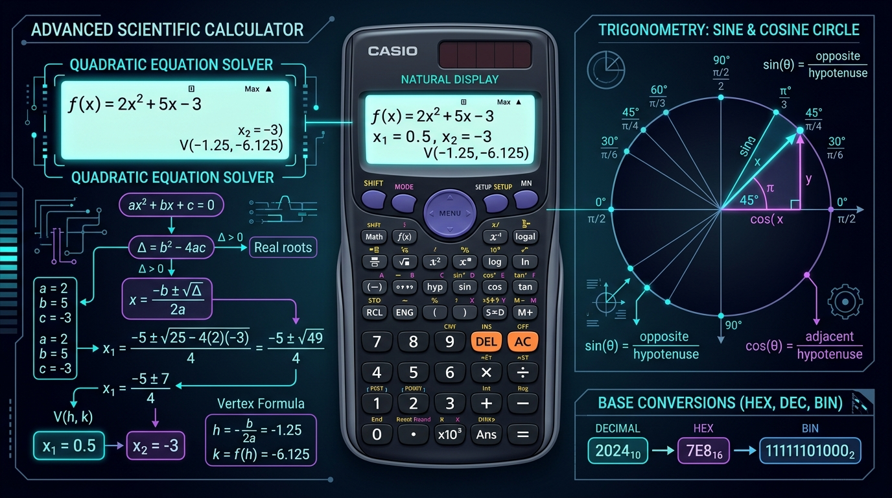

Pro Scientific Calculator Guide: Natural Math, Trigonometry, Solvers & Bases
Executive Takeaways
- Two-Line Natural Math Display: Mirrors Casio FX physical scientific calculators with a persistent formula history line above the high-contrast result line.
- Full Function Suite: Complete trigonometry ($\sin, \cos, \tan$, inverse, hyperbolic) with instant **DEG / RAD** toggle, powers ($x^y$), logarithms ($\log_{10}, \ln$), and factorials ($n!$).
- Specialized Academic Solvers: Includes a dedicated quadratic equation solver ($ax^2 + bx + c = 0$) with real/complex roots and a 4-way programmer base converter (DEC, HEX, BIN, OCT).

Mastering Scientific Calculator Workflows
100% Offline ReadyConfigure Angle Mode (DEG / RAD)
Ensure the status badge matches your problem: **DEG** for surveying, navigation, and physics; **RAD** for calculus and angular velocities.
Input Natural Math Expressions
Type formulas directly on your keyboard or click buttons: e.g. sin(45) + sqrt(144) * pi. Parentheses auto-balance on calculation.
Recall From Calculation Reel
Every calculation is automatically preserved in the live history tape on the right. Tap any prior computation to load it back onto the screen.
1. Why Simple Web Calculators Fail Engineering Students
Most basic calculators found on generic websites or bundled with desktop operating systems only support single-step elementary arithmetic ($5 + 3 = 8$). When high school and university students, engineers, or finance professionals encounter real-world problems, these simple tools fall short:
- No Full Expression Visibility: You cannot see the complete formula being entered, making it impossible to audit order of operations (PEMDAS/BODMAS).
- Floating Point Inaccuracies: Standard JavaScript arithmetic frequently produces rounding errors like
0.1 + 0.2 = 0.30000000000000004. - Missing Solvers: Solving $2x^2 + 5x - 3 = 0$ requires searching for an entirely separate math tool.
LocalDoc's Pro Scientific Calculator solves this by combining a robust math engine, clean precision normalization, and built-in equation solvers in one fast, zero-upload tool.
2. Mathematical Features & Capabilities
The calculation engine incorporates comprehensive academic functions:
- Degree & Radian Trigonometry: Accurately converts angles for trigonometric evaluation: $$\sin(x_{\text{rad}}) = \sin\left(x_{\text{deg}} \times \frac{\pi}{180}\right)$$
- Combinatorics & Factorials: Includes full support for permutations ($n\text{P}r$), combinations ($n\text{C}r$), and factorials ($n!$) up to 170!.
- Quadratic Equation Solver: Solves $ax^2 + bx + c = 0$ instantly, calculating:
- The discriminant $\Delta = b^2 - 4ac$
- Two real roots ($\Delta > 0$), one repeated root ($\Delta = 0$), or complex roots with imaginary components ($\Delta < 0$)
- Vertex coordinates $(h, k) = \left(-\frac{b}{2a}, -\frac{\Delta}{4a}\right)$
- 4-Way Programmer Base Converter: Synchronously updates Decimal, Hexadecimal, Binary, and Octal representations as you type.
3. Technical Comparison Matrix
| Feature | Standard Web Calculators | LocalDoc Scientific Calculator |
|---|---|---|
| Display Type | Single-line accumulator | Two-Line Natural Math Display |
| Angle Units | Often fixed or hidden | One-Tap DEG / RAD Switcher |
| Equation Solvers | None | Integrated Quadratic Solver ($ax^2+bx+c=0$) |
| Programmer Bases | None | Synchronized DEC, HEX, BIN, OCT |
| Offline Capability | Requires active internet | 100% Offline PWA Ready |
4. Frequently Asked Questions
Does the calculator follow proper order of operations?
Yes. The parser strictly adheres to mathematical precedence (PEMDAS / BODMAS): parentheses first, followed by exponents and roots, then multiplication and division, and finally addition and subtraction.
Can I use my physical computer keyboard?
Yes. You can type numbers 0-9, operators + - * / ^ ( ), press Enter or = to calculate, and Backspace to edit.
Are calculations sent to any cloud server?
No. All calculations are evaluated locally in your computer's RAM with zero latency and 100% data privacy.